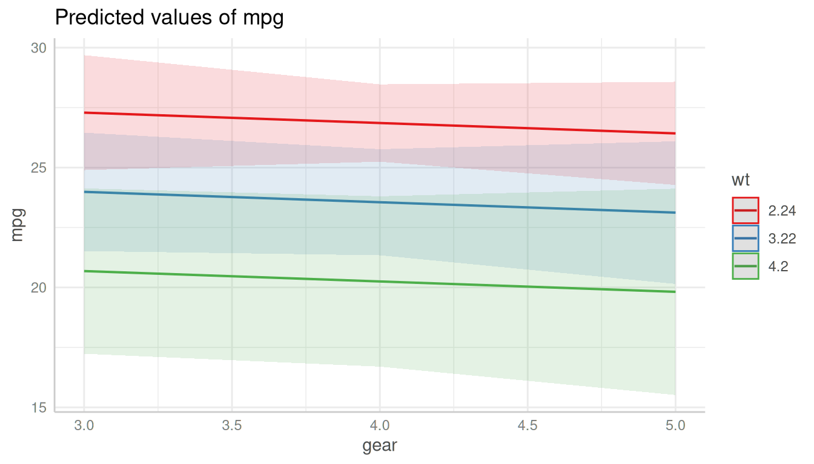
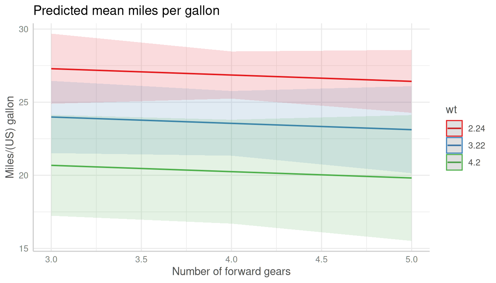
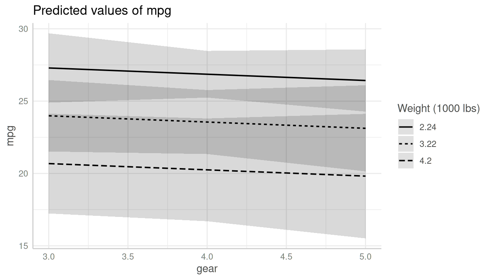
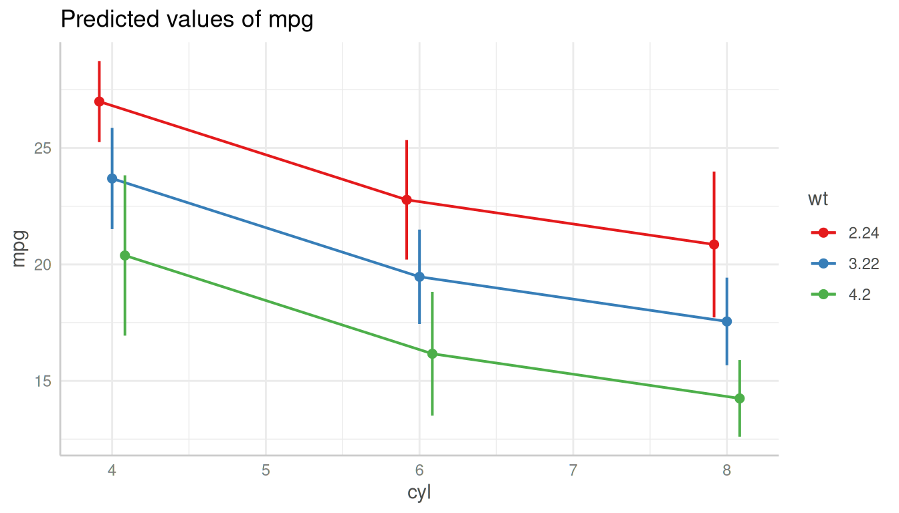
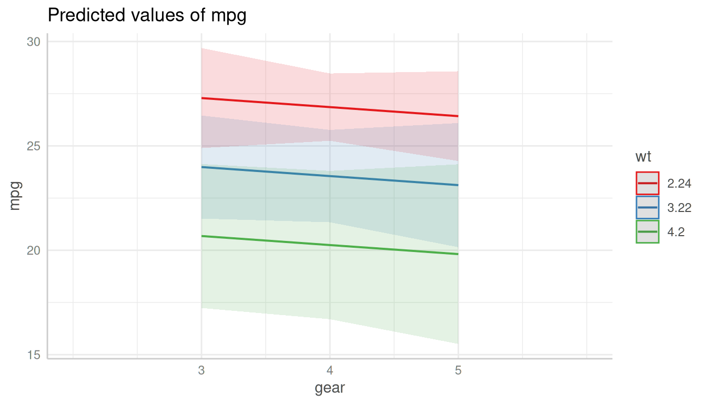
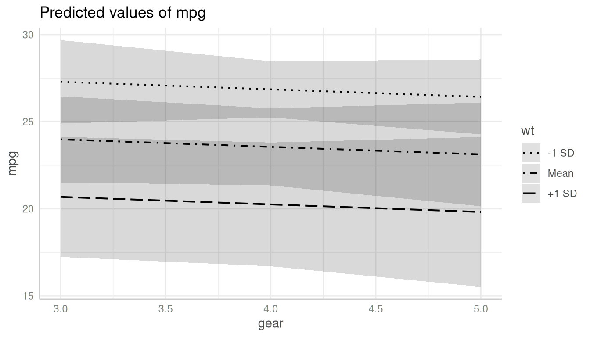

Introduction: Customize Plot Appearance
Source:vignettes/introduction_plotcustomize.Rmd
introduction_plotcustomize.RmdThis vignettes demonstrates how to customize plots created with the
plot()-method of the
ggeffects-package.
plot() returns an object of class
ggplot, so it is easy to apply further modifications to
the resulting plot. You may want to load the ggplot2-package to do this:
library(ggplot2).
Let’s start with a default-plot:
library(ggeffects)
library(ggplot2)
data(mtcars)
m <- lm(mpg ~ gear + as.factor(cyl) + wt, data = mtcars)
# continuous x-axis
dat <- predict_response(m, terms = c("gear", "wt"))
# discrete x-axis
dat_categorical <- predict_response(m, terms = c("cyl", "wt"))
# default plot
plot(dat)
Changing Plot and Axis Titles
The simplest thing is to change the titles from the plot, x- and
y-axis. This can be done with ggplot2::labs():
plot(dat) +
labs(
x = "Number of forward gears",
y = "Miles/(US) gallon",
title = "Predicted mean miles per gallon"
)
Changing the Legend Title
The legend-title can also be changed using the
labs()-function. The legend in ggplot-objects refers to the
aesthetic used for the grouping variable, which is by default the
colour, i.e. the plot is constructed in the following
way:
Black-and-White Plots
For black-and-white plots, the group-aesthetic is mapped to different
linetypes, not to different colours. Thus, the legend-title for
black-and-white plots can be changed using linetype in
labs():

Changing the x-Axis Appearance
The x-axis for plots returned from plot() is always
continuous, even for discrete x-axis-variables. The reason for
this is that many users are used to plots that connect the data points
with lines, which is only possible for continuous x-axes. You can do
this using the connect_lines-argument:
plot(dat_categorical, connect_lines = TRUE)
Categorical Predictors
Since the x-axis is continuous
(i.e. ggplot2::scale_x_continuous()), you can use
scale_x_continuous() to modify the x-axis, and change
breaks, limits or labels.
plot(dat_categorical) +
scale_x_continuous(labels = c("four", "six", "eight"), breaks = c(4, 6, 8))
Continuous Predictors
Or for continuous variables:
plot(dat) + scale_x_continuous(breaks = 3:5, limits = c(2, 6))
Changing the y-Axis Appearance
Arguments in ... are passed down to
ggplot::scale_y_continuous() (resp.
ggplot::scale_y_log10(), if log.y = TRUE), so
you can control the appearance of the y-axis by putting the arguments
directly into the call to plot():

Changing the Legend Labels
The legend labels can also be changed using a
scale_*()-function from ggplot. Depending
on the color-setting (see section Changing the Legend
Title), following functions can be used to change the legend
labels:
Since you overwrite an exising “color” scale, you typically need to
provide the values or palette-argument, to
manuall set the colors, linetypes or shapes.
Plots with Default Colors
For plots using default colors:
plot(dat) +
scale_colour_brewer(palette = "Set1", labels = c("-1 SD", "Mean", "+1 SD")) +
scale_fill_brewer(palette = "Set1")
Black-and-White Plots
For black-and-white plots:
plot(dat, colors = "bw") +
scale_linetype_manual(values = 15:17, labels = c("-1 SD", "Mean", "+1 SD"))
Black-and-White Plots with Categorical Predictor
For black-and-white plots with categorical x-axis:
plot(dat_categorical, colors = "bw") +
scale_shape_manual(values = 1:3, labels = c("-1 SD", "Mean", "+1 SD"))